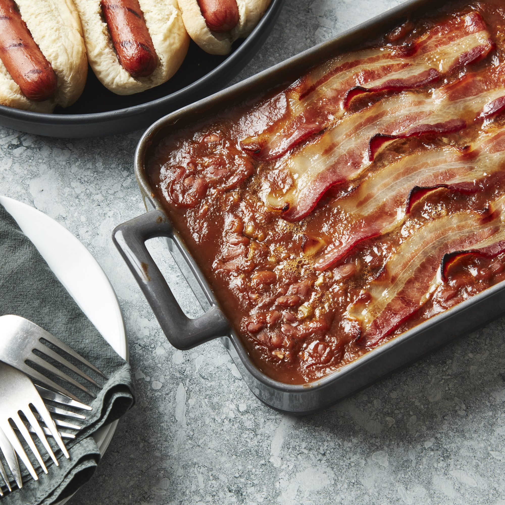

Better Baked Beans
Start with a a few cans of pre-made baked beans, and all you need to worry about is amping up the flavor with additional ingredients. "This is my grandma's favorite semi home-made recipe," says Diane Carman-Young. "She makes it every Thanksgiving, and we usually end up scraping the pan clean!"
Nutrition Facts
Per Serving: 192 calories; protein 7.4g; carbohydrates 34.6g; fat 4.7g; cholesterol 6.3mg; sodium 557.7mg.

Ingredients
- 2 (28 ounce) cans baked beans
- 1 small onion, chopped
- 2 tablespoons brown sugar
- 3 tablespoons pancake syrup
- 2 tablespoons ketchup
- 2 teaspoons prepared yellow mustard
- 4 slices bacon
Directions
- Preheat the oven to 350 degrees F (175 degrees C).
- In a large bowl, stir together the baked beans, onion, brown sugar, syrup, ketchup and mustard. Pour into a 9x13 inch baking dish, and lay strips of bacon across the top.
- Bake for 35 to 40 minutes in the preheated oven, until the bacon is browned and the beans have thickened.
Bon Appetit!